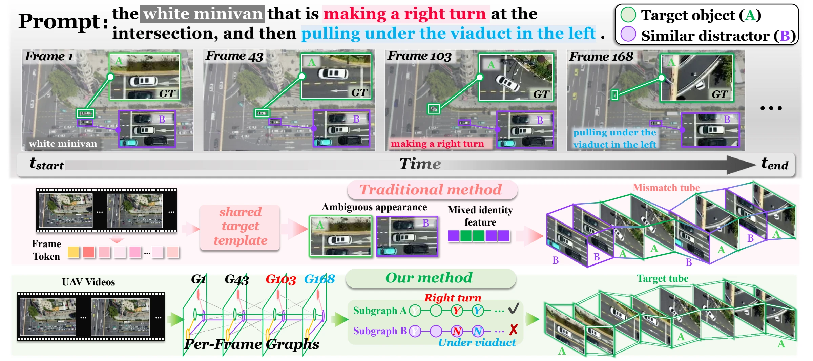
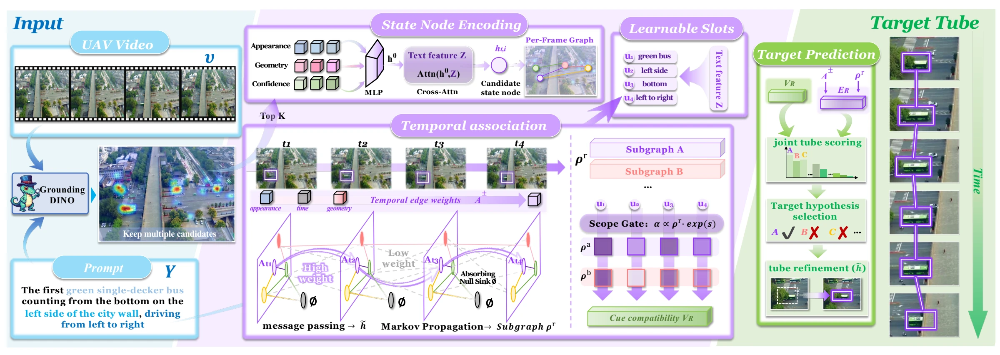
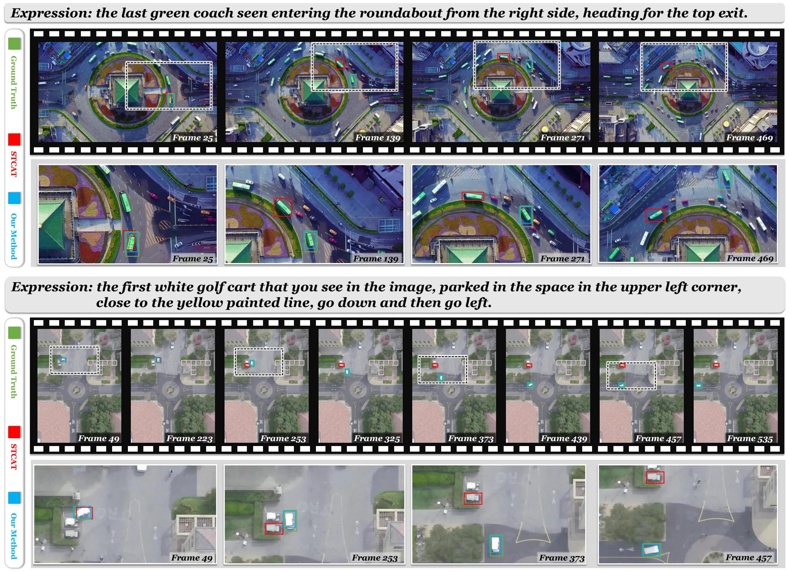
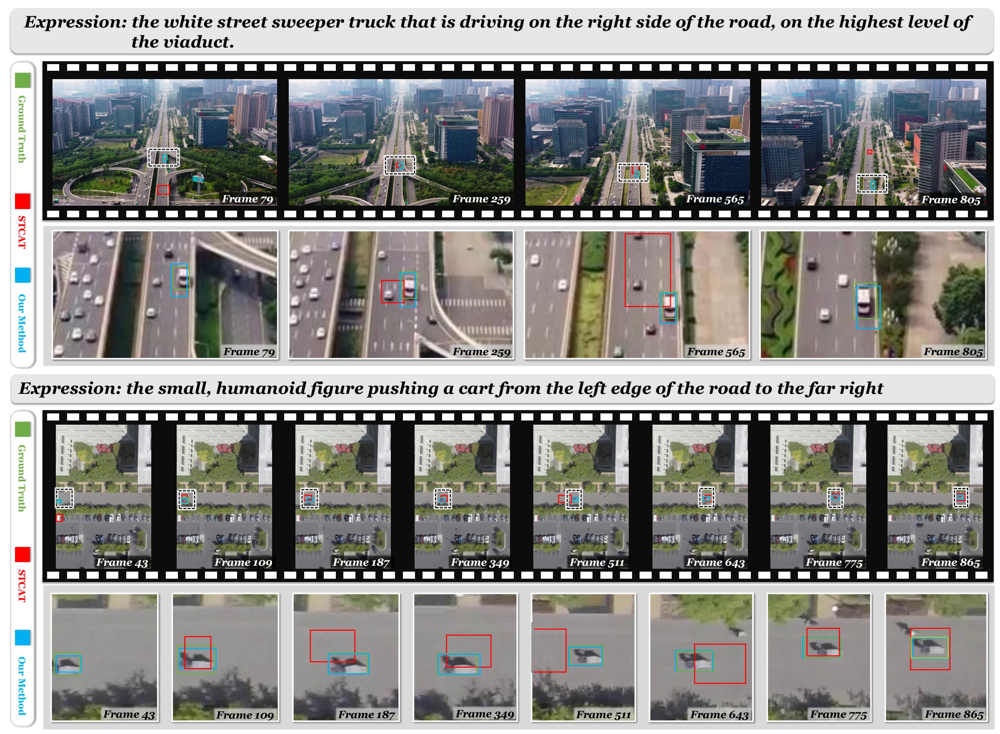
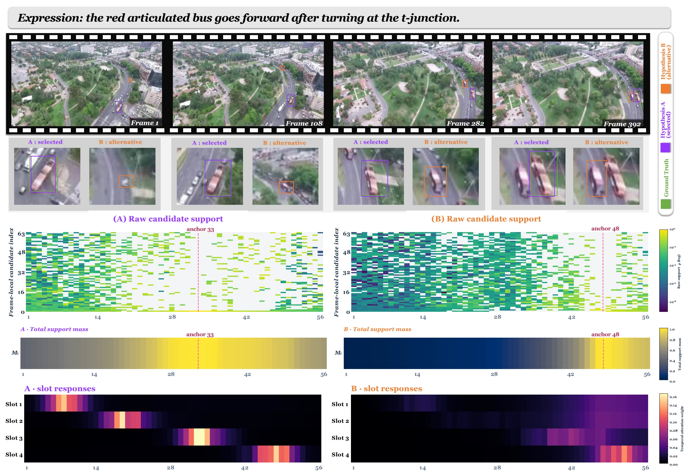
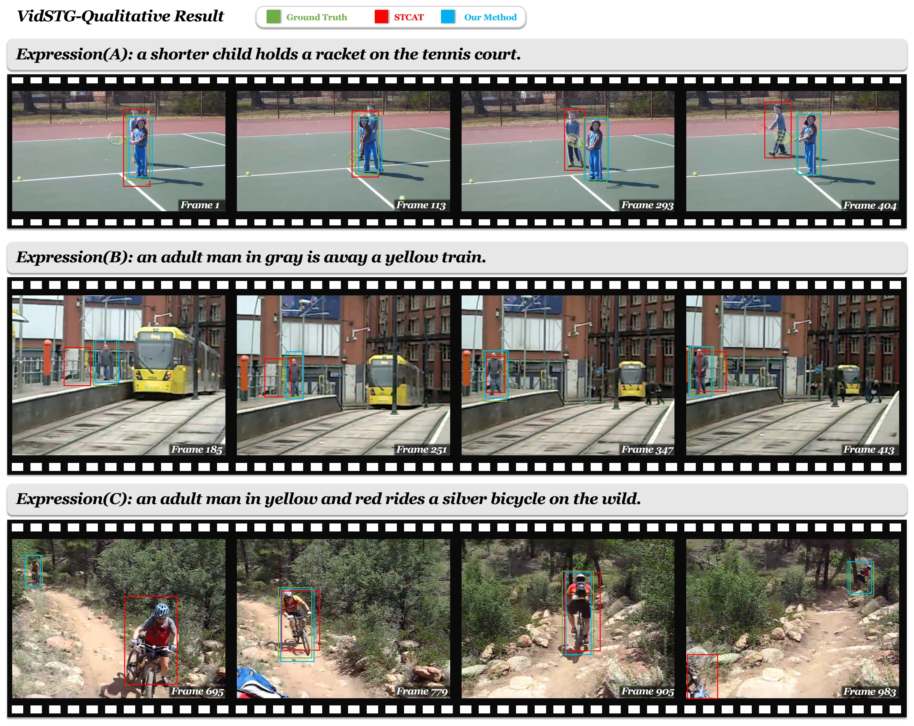
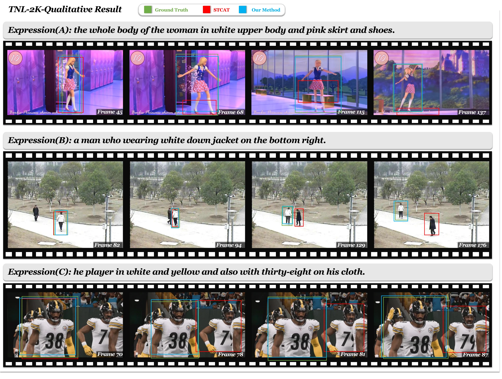
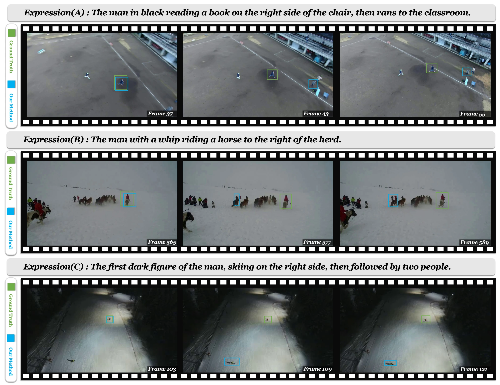

Build temporal support
Text-conditioned candidates become state nodes. Bidirectional soft associations with an unmatched option connect observations and enhance the shared candidate states.
UAV video grounding
Topology-Scoped Subgraph Reasoning
for UAV Video Grounding
Similar objects. Scattered clues.
Evaluate the evidence under competing correspondence hypotheses.

The idea
UAV video grounding localizes a language-specified target across a video. In aerial views, tiny objects often look alike, while the motion and spatial cues that distinguish them appear at different times. Combining these observations requires reasoning about which instance they belong to.
We introduce Topology-Scoped Subgraph Reasoning. A temporal candidate graph retains competing soft correspondence hypotheses. Bidirectional associations enhance shared candidate states and propagate anchor-conditioned support to induce soft subgraphs. Learnable semantic slots read these states with hypothesis-specific support weights, bringing together language-relevant observations across time. Association strength and cue compatibility jointly select a hypothesis for frame-wise box readout and refinement.
Method
One shared graph. Multiple correspondence hypotheses. A joint decision.

Text-conditioned candidates become state nodes. Bidirectional soft associations with an unmatched option connect observations and enhance the shared candidate states.
Each candidate anchor induces a weighted support across time. Multiple learned slots share that support while reading different language-relevant observations.
Association strength and slot compatibility jointly score hypotheses. The selected support guides per-frame candidate readout and bounding-box refinement.
Quantitative results
Overall comparisons and controlled variants on UAV-SVG.
| Method | m_vIoU ↑ | vIoU@0.3 ↑ | vIoU@0.5 ↑ | m_fAcc ↑ | fAcc@0.3 ↑ | fAcc@0.5 ↑ |
|---|
Prior-method scores follow the manuscript's reported comparison. † Our 224-pixel reproductions. ‡ Published zero-shot result; input resolution unreported. Ours uses an adapted Swin-T/BERT Grounding DINO frontend at a 224-pixel short edge. Frontends and original evaluation settings differ across prior methods.
+12.36 pp m_vIoU over the resolution-matched STCAT reproduction.
| Setting | m_vIoU ↑ | m_fAcc ↑ | U8 ↑ |
|---|
Controlled configurations use the adapted Swin-T/BERT frontend. Local-only removes temporal reasoning; Unscoped readout removes hypothesis support conditioning. U8 is the rate of nine consecutive sampled localizations being correct, with IoU > 0.5 and no interpolation.
Scoping evidence readout adds +2.32 pp m_vIoU and +3.90 pp U8 over the unscoped variant.
Target scale
On targets occupying less than 0.1% of the frame, m_fAcc rises from 11.71% to 30.57%.
Groups use each query's median normalized ground-truth box area. The smallest group contains 1,110 queries across 222 videos.
Median target area / frame area
Qualitative results
From visually similar distractors to tiny targets and competing hypotheses.



Cross-dataset transfer
Direct transfer without target-domain fine-tuning or ground-truth box initialization.
+5.65 pp over STCAT on the VidSTG test set. Localization is evaluated within ground-truth temporal intervals.
| Query type | Method | gt-vIoU ↑ | gt-vIoU@0.3 ↑ | gt-vIoU@0.5 ↑ | m_fAcc ↑ |
|---|

700 test sequences. Both methods use at most 100 uniformly sampled frames per video. The same predictions are also evaluated densely after shared linear interpolation.
| Method | m_vIoU ↑ | vIoU@0.3 ↑ | vIoU@0.5 ↑ | m_fAcc ↑ | fAcc@0.3 ↑ | fAcc@0.5 ↑ |
|---|
This is the paper's offline language-grounding transfer protocol with UAV-SVG-style spatial metrics, rather than the native first-frame-initialized tracking protocol.

A closer look
Removing soft association, unmatched handling, adaptive fusion, or a scoring input lowers localization and temporal-window performance.
| Setting | m_vIoU ↑ | m_fAcc ↑ | U8 ↑ |
|---|
The full model adds about 0.66M parameters over Frontend-only. At a budget of 64 anchors, m_vIoU changes from 40.93% to 40.72%, while backend latency decreases from 81.32 ms to 32.97 ms.
| Configuration | m_vIoU ↑ | U8 ↑ | Full pipeline (ms) ↓ | Peak memory (GiB) ↓ |
|---|
RTX 4090, FP32. Runtime is per video–description pair on eight profiling pairs, including input loading and preprocessing, with 30–100 sampled observations (mean 64). Accuracy uses the benchmark evaluation. Full-pipeline speed is dominated by the frontend.
Ambiguous observations and unreliable candidate support can still produce localization errors. Shared state enhancement and frame-wise readout do not impose a hard identity-consistency constraint.
